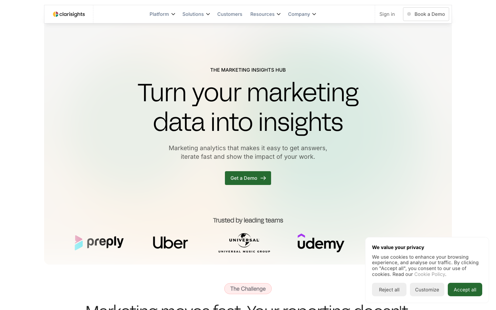
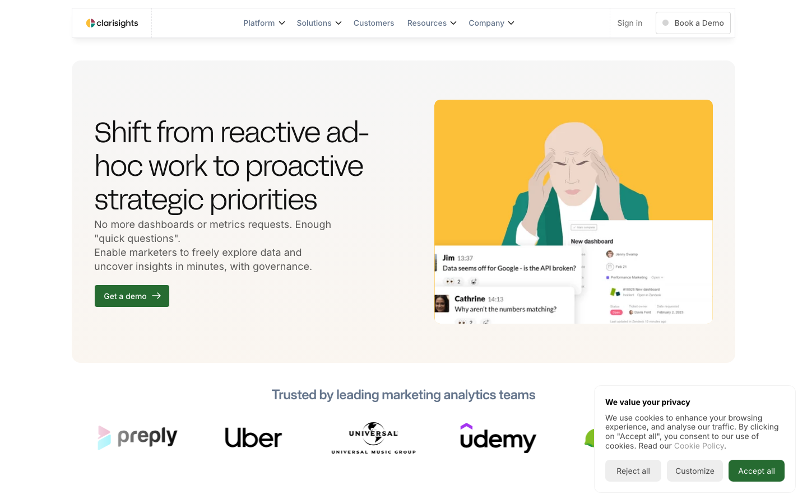
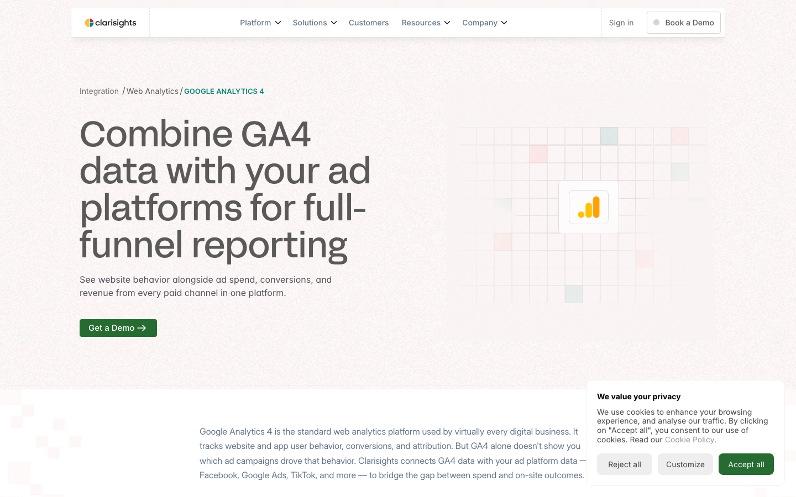
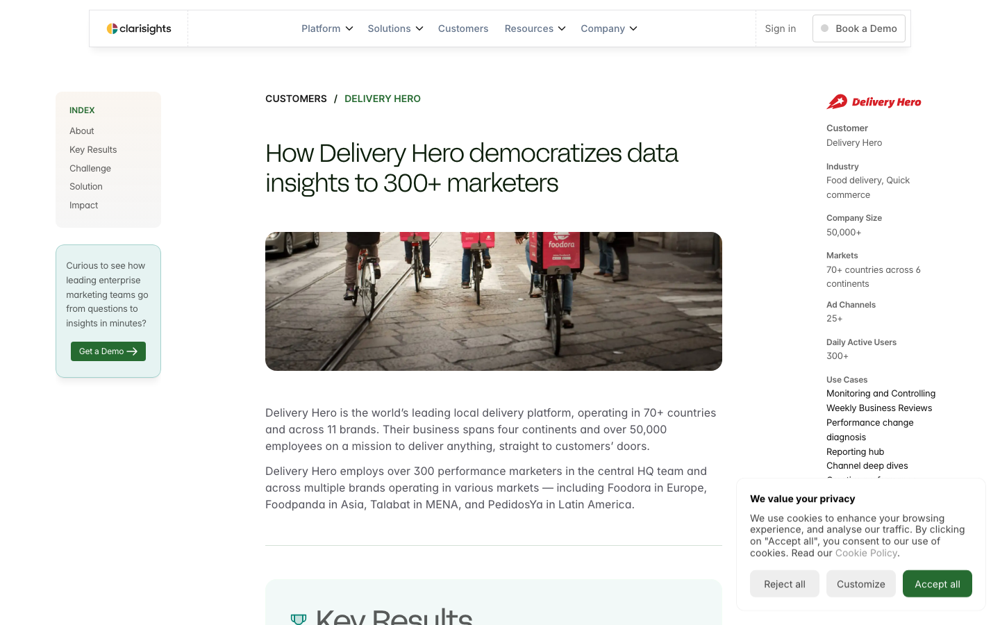
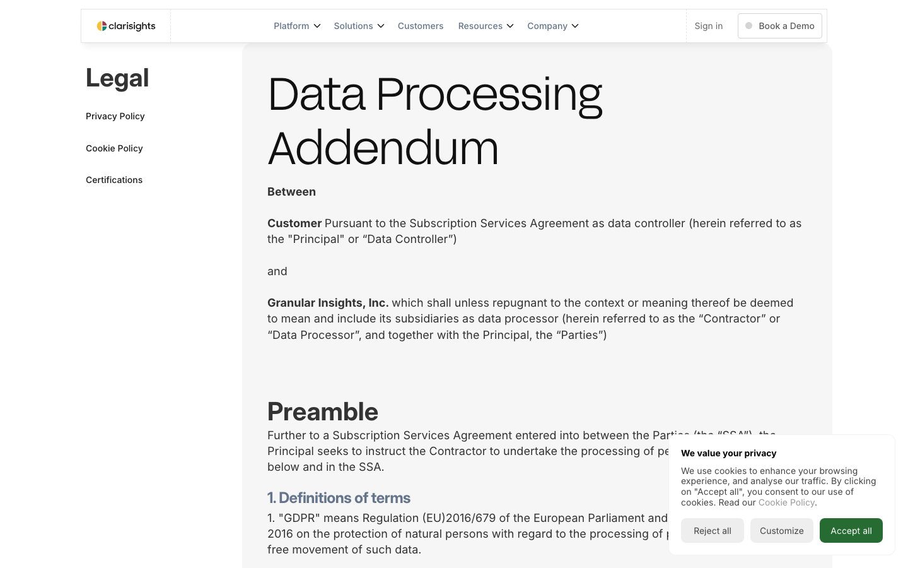

A complete inventory of the public site — every URL, every content type, every design token — and a clear path from the current Framer build to a Sanity + Next.js system the team can run, edit, and extend without touching code.
Pulled directly from clarisights.com/sitemap.xml on Apr 29, 2026.
| Stack | Framer (server: Framer/5ec735e, framerusercontent CDN, dynamic CSS tokens) |
|---|---|
| URLs in sitemap | 187 |
| Content types found | 7 distinct templates + 8 bespoke static pages |
| Total body words | ~108,000 (excluding nav/footer chrome) |
| Errors / non-2xx | 0 |
| Type | Pages | Avg words | What it is |
|---|---|---|---|
| Blog articles | 69 | 1,328 | Editorial — meatiest corpus, 171–3,911 words |
| Data sources | 41 | 362 | Programmatic SEO — one template, identical shape (Google Ads, Meta, TikTok…) |
| Use cases | 20 | 949 | Channel + industry + workflow deep dives — very tight 845–1,109 words |
| Blog categories | 15 | 70 | Index pages, no body |
| Blog authors | 15 | 55 | Index pages, byline only |
| Static marketing | 8 | 433 | Home, About, Demo, Customers, Integrations, Security, For-Marketing, For-Data |
| Legal | 6 | 1,688 | Privacy, Cookies, DPA × 2, Certifications |
| Case studies | 5 | 1,292 | Bitpanda · On · HelloFresh · DeliveryHero (×2) |
| Misc | 8 | — | Blog index ×2, Guides ×2, Ebooks ×2, Competitor ×1, Migrate ×1 |
The two takeaways: (a) 110 of 187 pages — every blog article + every data source — are CMS-shaped records that auto-import from a Framer CSV export. (b) the static + use-case + case-study + competitor pages are ~36 bespoke layouts in total, the realistic redesign surface.
Detected by clustering the H2 phrasings across all 187 pages. Same H2s appearing on 41 pages = a single repeating template.

Hero · Logo wall · Three feature blocks · Testimonial strip · Stats · CTA card. The eight static pages (home, /for-marketing-teams, /for-data-teams, /customers, /integrations, /security, /demo, /about-us, /migrate-to-clarisights, /competitors/clarisights-vs-bi-dashboards) all use ad-hoc layouts that don't repeat. Page builder in Sanity.

Hero with H1 + 1-line description · Logo wall · Three "why teams use Clarisights" cards · Capability paragraphs · "What our customers say" pullquote · "See the platform in action" CTA · FAQ. Every page is variations on the same scaffold.
Sanity: useCase doctype with reusable section blocks.

Identical structure on all 41 pages: Hero · "About this integration" · Reports you can build · Cross-channel pairing · Industry use cases · Metrics & dimensions · FAQ. Each section appears on exactly 41 pages — confirming this is one programmatic template fed by structured data.
Sanity: dataSource doctype with shared section blocks. Source data probably lives in a Framer CMS table — clean export.

Customer header · Key Results (3–4 metrics) · Challenge · Solution · Impact · CTA card. Each block appears on 5 of 5 pages.
Sanity: caseStudy doctype with metric array + body Portable Text.

Title · Long-form body. Blog articles also have author byline + category + cover image. Both render the same article shell — different metadata.
Sanity: post + byline + category; legal pages can be a thin legalPage doctype or a body inside page.
Real values pulled from rendered HTML across 14 representative pages. Counts = occurrences in raw CSS.
| Where | Family | Weight / use |
|---|---|---|
| H1 (108 of 187 pages) | FFF Acid Grotesk Light | Display headlines. Loaded from framerusercontent.com. |
| H1 (41 pages, mostly data-sources) | FFF Acid Grotesk Regular | Slightly heavier for SEO templates. |
| Body | System sans-serif fallback | Inherits Acid Grotesk via parent. Inter is in the CSS but never reached. |
The homepage CSS also defines Manrope, Be Vietnam Pro, Adamina, and Fragment Mono — none of these are actually rendered. Pure leftovers from earlier Framer template iterations. Ignore them.
Reading: teal is the brand. The deep-green family (266b31 / 07351e / 0c1e0b) reads as a "darker than black" headline color — Framer is treating it as a brand-tinted ink, not as a separate color. The red is used only as inline accent text (43 hits, 100% in color: declarations). The yellows / emeralds are illustration / chart colors and don't need to migrate as tokens.
Full palette reference: site-survey/palette.html (local).
The 14 most-used H2 phrasings tell us exactly which sections to build as Sanity components:
| Pages | H2 | Translates to |
|---|---|---|
| 69 | "See Clarisights in action" | FinalCtaBlock |
| 42 | "Frequently asked questions" | FaqBlock |
| 41 | "Reports you can build" | ReportsBlock (data-source only) |
| 41 | "Cross-channel pairing" | CrossChannelBlock |
| 41 | "Industry use cases" | IndustryUseCasesBlock |
| 41 | "Metrics & dimensions" | MetricsTableBlock |
| 20 | "What our customers say" | TestimonialBlock |
| 20 | "See the platform in action" | PlatformDemoCta |
| 11 | "Full visibility at all times" | FeatureCard (variants) |
| 7 | "Hands-on support from experts" | FeatureCard (variants) |
| 5 | Key Results / Challenge / Solution / Impact | CaseStudyBody (4 fixed slots) |
Total Figma components needed: ~14. Hero, Logo wall, Feature card, Stat strip, Testimonial, FAQ, Final CTA, Case-study metric, Reports block, Cross-channel, Industry uses, Metrics table, Blog card, Author card.
Get a Demo on 105 of 187 pages. Everything funnels here. The new site should keep this as the primary action, with one secondary Talk to Sales on enterprise-leaning pages.
Seven document types + a page builder. Mirrors what we shipped for recurr.co (recurr-v6) and uncharted-ai.com.
// 7 document types — drives the entire site post { title, slug, byline→, category→, hero, body[], excerpt, publishedAt, ogImage } byline { name, slug, role, bio, avatar, links[] } category { name, slug, description } useCase { title, slug, type:'channel'|'industry'|'workflow', hero, sections[] } caseStudy { customer, slug, logo, metrics[], hero, challenge, solution, impact, body[] } dataSource { name, slug, vendor, logo, hero, reports[], pairings[], industries[], metrics[], faq[] } guide { title, slug, downloadFile, sections[] } // + 1 flexible page builder for the 8 static pages page { title, slug, sections[] } // home, demo, security, etc. // + 1 site-wide settings siteSettings { nav[], footer[], primaryCta, ogDefault } // ───── reusable section blocks (used inside sections[]) ───── heroBlock { eyebrow, headline, subhead, primaryCta, secondaryCta, media } logoWallBlock { headline?, logos[]→customer } featureCardBlock { title, body, icon?, image?, cta? } testimonialBlock { quote, person, company, logo? } statsStripBlock { stats[]:{value, label, suffix?} } faqBlock { questions[]:{q, a} } finalCtaBlock { headline, subhead, primaryCta, secondaryCta } reportsBlock { items[]:{title, description, image?} } crossChannelBlock { headline, channels[]→dataSource } industryUsesBlock { headline, items[]:{industry, body} } metricsTableBlock { headline, rows[]:{name, type, description} } blogCardBlock { post→post } // shown in indexes caseStudyMetricBlock{ value, label, customer→ }
Notes worth flagging now:
dataSourceTemplate singleton with overrides per record. Decision for build phase.Blog/Articles/foo, blog-articles/collection, and Blog/Collection all live — that's three slug schemes. New site standardizes on /blog/foo, /blog/categories/foo, /blog/authors/foo. We generate a 187-row 301 redirect map at cutover.customer a top-level type so a logo update propagates everywhere.7 steps, one role-tag per step. Estimated 5–8 working days end to end (excluding the design redesign itself).
187 URLs scraped, body text + meta extracted, design tokens mapped, components inventoried. This page is the deliverable.
Settings → CMS → for each collection (Blog Articles, Blog Authors, Blog Categories, Case Studies, Use Cases, Data Sources, Guides) → Export CSV. Drop into ~/recurrco/projects/content-studio/clients/clarisights/framer-export/. We get clean source-of-truth records instead of scraped HTML.
Build the ~14 components + 5 page templates as a single Figma library, using Acid Grotesk + the brand teal palette as the foundation. Decision call here: rebuild same design (1× scope) or redesign (2× scope, but worth it — the current site has 5 fonts defined, 2 competing accents, inconsistent slug casing, weak blog typography).
New repo recurrco/clarisights-sanity from the recurr-v6 template. 7 doctypes + page builder + section blocks per the schema above. Sanity project under the recurrco org, dataset production.
One route per template: /blog/[slug], /use-cases/[slug], /case-studies/[slug], /data-sources/[slug], /guides/[slug], plus the static page-builder routes. Components map 1:1 to the Figma library.
Idempotent script reads Framer CSV exports + scraped body markdown → creates Sanity documents. Markdown → Portable Text uses our existing _md-to-pt-v2.mjs converter (already battle-tested on 25 SaaStitute imports). Customer logos and OG images uploaded to Sanity assets.
187-row redirect map (old slug → new slug). DNS swap from Framer to Vercel. Sanity webhook → /api/revalidate for instant publish (same loop as recurr.co/press). Smoke tests on 14 representative URLs across all templates.
Survey artefacts (raw): ~/recurrco/projects/content-studio/clients/clarisights/site-survey/ — 187 body markdowns, page index CSV, design-token JSON, screenshots, palette HTML. recurr.co